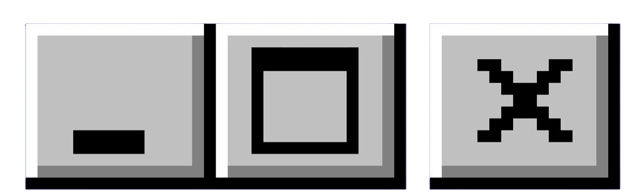

|
A CITY MADE OF YOU

|
I left work early one evening and the city began to fall into the sea. The sea rose up and swallowed whole buildings. White walls and factories were far away with the cranes, steel necks ducking down and straightening in the moonlight.
They say there are cells in the mind aligned in a grid, that when we wish to know how far something is from us, we measure using a physical distance in the mind.
The cells cannot measure emotional distance, and the grid cannot signal a specific place, for this they say we use patterns. I have many special places, I wish I could show someone not only the special place but the feeling that it gives me. They say when we are born, we first create grid and place cells, we first create somewhere to put everything else.
When I first came to this new city, I had to build new place cells and new patterns within my inner grids, this was not easy. My places often don’t connect, appearing out of the fog more like colorful islands. My most special place then was an abandoned building by the highway; now that I’ve moved, I have no idea where it is.
We know that places can remind us of someone, often painfully. There were two cities, the real streets and the grid within my mind. When I couldn’t stop thinking of you, you became like a haze over everything I built, everywhere began to feel the same.
Is it possible I created my understanding of the city within my understanding of you? I was learning your behavior at the same time I was learning the stations of the trains, you liked to meet along the U3, but never near where I lived.
I learned the stations were a method of control, and compromise, also like our bodies. Some days you felt like touching me, I could never find the pattern in it though.
I wonder sometimes if my place cells work differently, people don’t often tell me about places in the same way I feel them. I wonder if it could be a kind of synesthesia, different places overlap very easily, making me feel like I’m dreaming.
I’m pulling Berlin apart, it’s no longer a city made of you. But the streets and highways I built when I knew you are still there, will I someday return to a place like you?
|
|
|